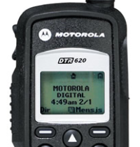
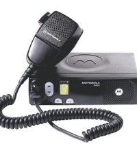

NOSSOS PRODUTOS
MOTOROLO DEP-450 VHF OU UHF

- DETALHES DO PRODUTO
- 16 Canais de Comunicação
- Faixa de frequência UHF (438-470 MHz) e VHF ( 136-174MHz)
- 4-5 W de potência de saída
- Programação via software
- Bateria de Li-ion 1600mAh
- Carregador de mesa individual bi-volt
- Itens inclusos: 1 Rádio DEP-450 , 1 bateria, 1 carregador, 1 clip de cinto
- Acessórios opcionais: Estojo em couro, fones, baterias e clip de cinto
Rádio Portátil Profissional DTR-620

- DETALHES DO PRODUTO
- Comunicações privativas utilizando o FHSS
- Recebimento, retorno, origem de chamada privativas (tom de
alerta/ alerta vibratório VibraCall®)
- Chamada privativa de grupo
- Atribuição de um nome para chamada de grupo e chamada
privativa (via Mini teclado – opcional)
- Acessórios com Vibracall
- Conector de acessório de áudio de 2 pinos com tampa fixa
- Capacidade de monitoramento e desabilitação
- Acessórios opcionais: Estojo em couro, fones, baterias e clip de cinto
MOTOROLA EM-200 VHF UHF

- DETALHES DO PRODUTO
- 4 Canais
- Tela de 1 Caractere
- Eliminação de Canal Ruidoso
- Varredura com Prioridade
- Bloqueio de Canal Ocupado
- Repetidor / Comunicação Direta
- Compressão de Voz (X-Pand™)
- Transmissão Interna tivada por
Voz (VOX)